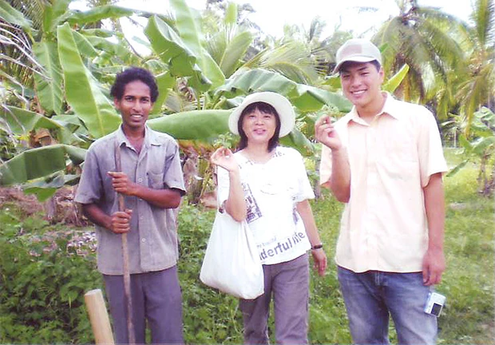

「スリランカという国に興味を抱いていて、英語も勉強したいと思っていて、さらにいくつかのボランティア活動ができて良さそうだと思ったので参加しました。
とても迅速で、丁寧な対応で満足しています。
現地では不安になることはありませんでした。
英語レッスンは、使う教科書が比較的簡単でしたが、自分が簡単と思う割にはできなかったので、助けられました。
宿題は特になかったです。
教科書のレッスンは、先生も僕も好きじゃないので、先生のいつも持ってくるNEWSPAPERをよんで、『人生の楽しみ方』『宗教』『恋愛』など、興味のあるものを先生の解説付きでやることが主になっていました。
僕もそのレッスンがとても好きで、自然と英語にもどんどん慣れていったのだと思います。
ホームステイ先は、想像以上に過ごしやすい家でした。
蚊に苦しめられる夜もしょっちゅうありましたが、それもいい経験です。
ホテルとかと違って家族の一員として振舞っていけたことがとても貴重な経験であったかと思います。
最終日に、家族と別れて日本に帰る時に僕は号泣してしまいました。
今までこんなふうに泣いたことはありません。
それほどこのホストファミリーのことが大好きになったのです。
本当の家族のように扱ってくれたし、カタラガマやキャンディーや、特別なパーティーにまで連れいってくれました。
家族は、とても多く、そのすべての人が僕に対して優しくしてくれました。
さらには多くの友達の家に行って、たくさんの人に出会うことができ、大変に満足しているし、自分はとてもラッキーだったと思います。
一緒に作ったロティやご飯、おなかいっぱいの食事、優しさにあふれた家族を今後の生涯で忘れることはないでしょう。
今後とも連絡を取り続けたいと思います。
低開発村は、TFGスタディーツアーでも訪れました。
TFGが、自立促進の支援を続けているおかげで農場やガーデンがうまくいき、収入を得ているんだなとかんじました。
低開発というから、かなりひどいものを想像していましたが、実際にはそこまでひどい生活には見えませんでした。
スリランカに行く前は、戦争中だし人びとの心に暗い影響を及ぼしているのだろうな、と思ったが、実際には人びとは明るく威勢のいい人や、優しい人が多いなと思いました。

僕が出会ったスリランカの人びとは、日本人に対して優しい感じがします。
もちろんなかには悪い人もいるというので気をつけるに越したことはないのですが、本当に気をつけるべきなのかなぁ、と思っていました。
人びとの信仰の強さにはビックリしました。
日本ではなかなか見られないような光景をみました。
お寺に毎日あれだけの人が集まるとは。
日本の写真をデジカメに入れておくなどしておけばよかったです。
家族などに日本について説明しやすかったと思いました。
自分の家族の写真、料理の写真をもっていくべきでした。
携帯を持っていって使えるようにすればよかったです。
日本の方からの連絡手段を一切断ってしまって、友達に迷惑をかけました。
向こうの言葉（シンハラ語）を覚える努力が必要に思いました。
僕はシンハラ語を使ってたくさんの人と友達になりました。
ちょっとしかできないけれど、挨拶や、基本事項ができるようになると楽しくって、おもしろい。
シンハラ語で意思疎通できたときの嬉しさはとっても大きかったです。
スリランカへは、もちろんまた行きたいと思います。
たくさんの友達がいるし、家族もいるので。
帰国後は、スリランカの友達を、地元でもたくさん作り、スリランカに行ったときのことを話すなどして楽しい日々を送っております。
日本に来られるスリランカの人が結構多いこともわかり、実際に、スリランカと日本、また自分とのつながりを深く感じております。
スリランカ人と日本人の友好関係をもっと深めていけたらいいですね。
また、英語も、あのスリランカでの経験で、いろいろな英語があるんだということに気づき、アメリカ英語を越えた幅の広さを身につけることができました。
正しい、正しくないにかかわらず英語を使うということを練習できたのは良かったです。」